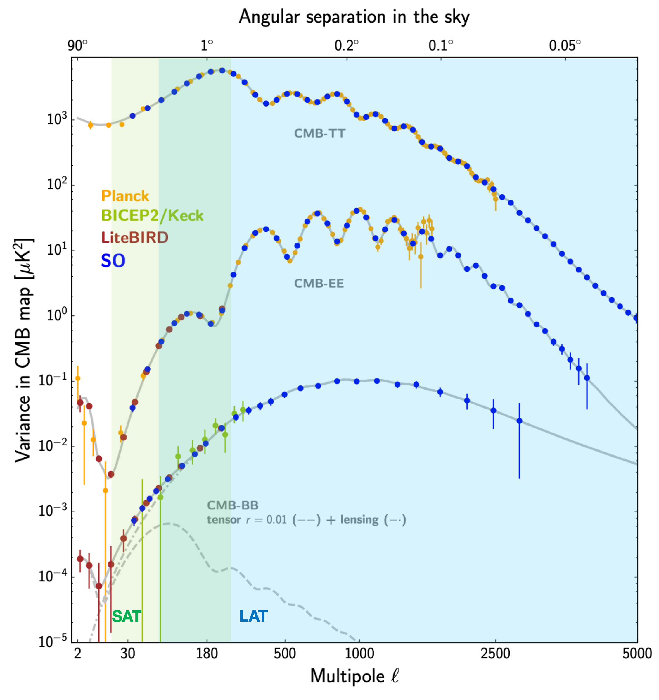
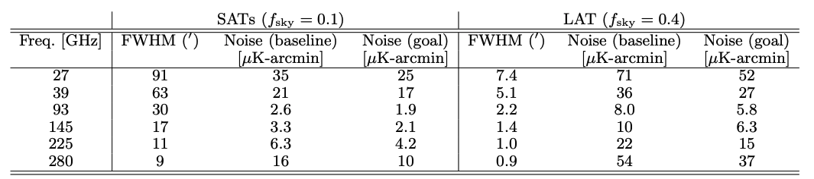
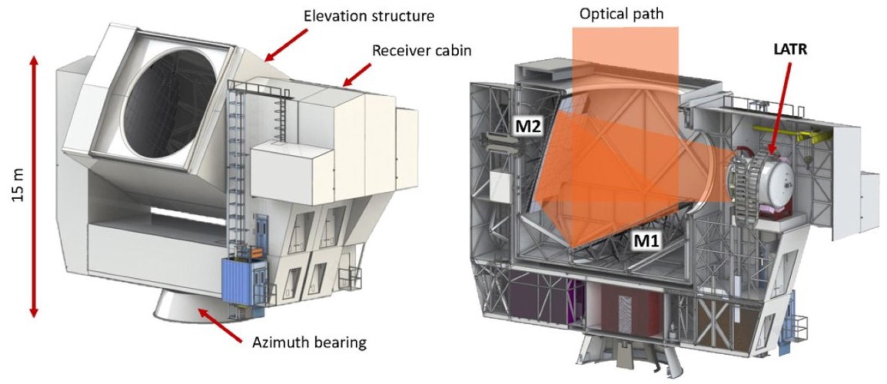
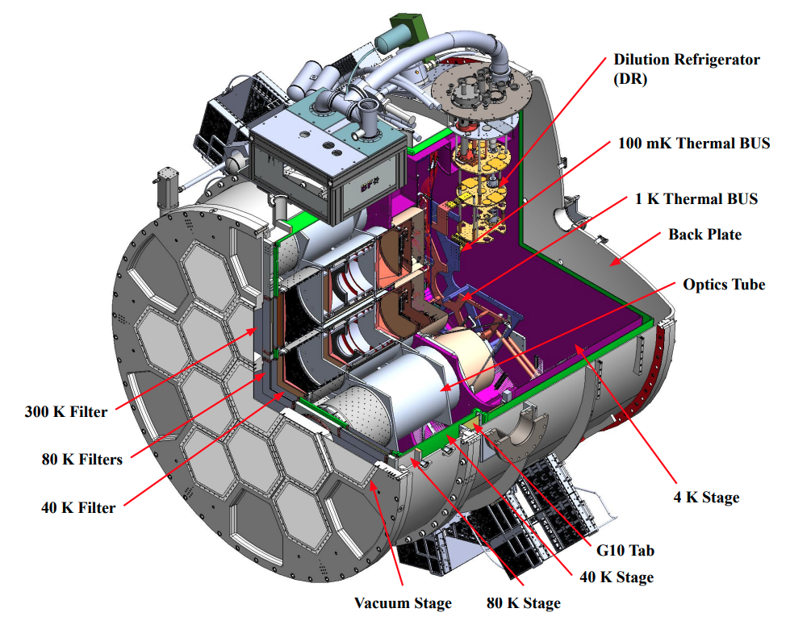
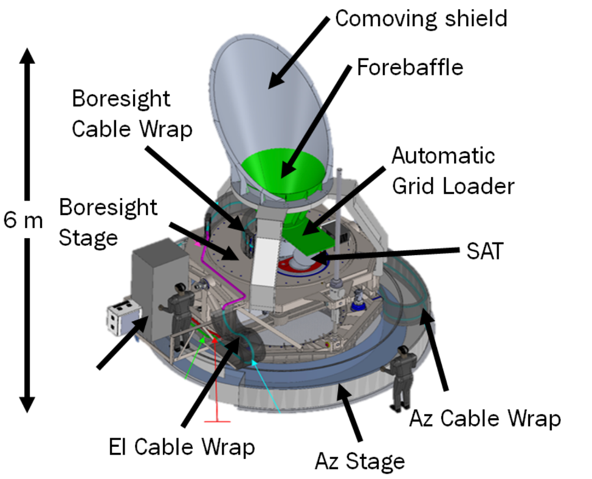
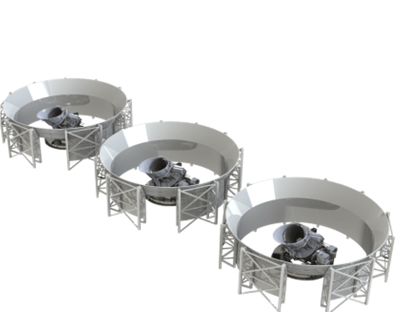
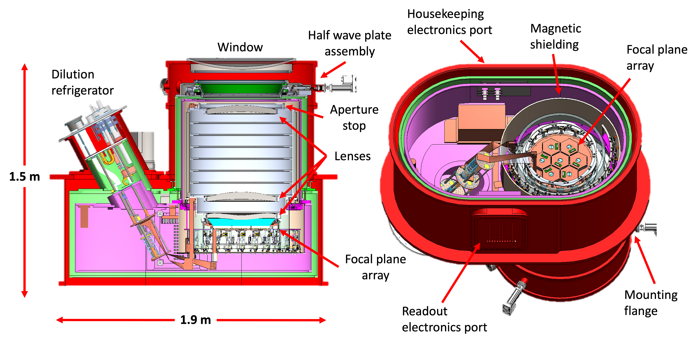

The Simons Observatory
Over the past several decades, cosmic microwave background (CMB) experiments have brought new insights into the fundamental sciences and advanced the standard cosmological model (\(\Lambda\)CDM) (e.g. (Efstathiou, Bond, and White 1992)). Experiments like the Simons Observatory (SO) and CMB-Stage 4 (S4) are attempting to find evidence for inflation, a rapid expansion of space-time soon after the universe began, which would help solve issues in the \(\Lambda\)CDM model and explain the path towards the current structure of the universe (The Simons Observatory Collaboration 2019; K. N. Abazajian et al. 2016). As described in Chapter [ch:cmb], polarization signals in the CMB are often written as an effective Helmholtz decomposition into curl-free E and divergence-free B modes. Inflationary B-modes are hypothesized products of primordial gravitational waves. The search for this faint signal requires understanding and removing galactic and extragalactic foregrounds which contribute to the B-mode signal as well. In particular, synchrotron emission at low frequencies and dust emission at high frequencies within our observing windows must be removed. A primordial E-mode signal can also be gravitationally perturbed by large scale structure into a lensing B-mode signal. These lensing B-mode signals contain valuable information about the structure of the universe, but must be subtracted out to extract any inflationary signals. The inflationary B-mode signal can be parameterized by r, the tensor-to-scalar ratio of CMB polarization, as an effective energy scale for inflation (Baumann 2009; Seljak and Zaldarriaga 1997; Kamionkowski, Kosowsky, and Stebbins 1997; Kamionkowski and Kovetz 2016).
This thesis is primarily focused on work in Simons Observatory, with some of Chapter [ch:detarrays] containing work also for CMB-S4 and the LiteBIRD satellite. To contextualize Simons Observatory (and other upcoming experiments), this chapter starts with a brief review of the state of the field and important considerations when thinking of instrument sensitivities that will be helpful in the later chapters of this dissertation. Finally, the Simons Observatory science and instruments will be introduced.
State of the Field
CMB observatories have evolved in stages. Stage 2 observatories had \(\mathcal{O}(\lesssim 1000)\) detectors, and included the ACTPol (ACT is the Atacama Cosmology Telescope), BICEP, SPTPol (SPT is the South Pole Telescope), Planck, SPIDER, and POLARBEAR experiments. Stage 3 experiments had \(\mathcal{O}(1000-10,000)\) detectors and included Advanced ACTPol, BICEP/Keck Array, SPT-3G, Simons Array, and CLASS1. Many of these experiments are currently taking data or have, like ACT, have completed their observations and decommissioned. BICEP/Keck Array and SPT-3G have since stepped into a pseudo-Stage “3.5" regime where they are deploying \(\mathcal{O}(50,000)\) detectors. Simons Observatory is also currently deploying with the same order of detectors as an intermediate between Stage 3 and 4. Stage 4 experiments are CMB-S4 and LiteBIRD, which are observatories that will operate in the 2030s. CMB-S4 will have \(\mathcal{O}(500,000)\) detectors on the sky. Note that satellites like Planck and LiteBIRD have much fewer detectors for two main reasons: power and weight is a precious resource in space, and there is no bright atmosphere to combat, which means high sensitivities can be achieved with fewer detectors. The atmosphere on Cerro Toco (\(\mathcal{O}(10)\) K) is more than 100 million times brighter than the predicted BB power spectra peak for \(r = 0.01\) (\(\sim 100\) nK) (Hill 2020). In fact, the High Frequency Instrument (HFI) for Planck covering the 100-857 GHz bands only has 52 bolometers, with an additional 2 “dark" bolometers (i.e. bolometers not coupled to an antenna) to measure thermal noise. LiteBIRD plans to launch with \(\mathcal{O}(2000)\) detectors, which is 2 orders of magnitude more!
There have been large advances in technologies to deploy these 10s to 100s of thousands of detectors without degrading sensitivity on the focal plane (see Section 1.2). A goal of this dissertation is to highlight some of these advances for Simons Observatory and CMB-S4 technologies, with an emphasis on technical goals for probing inflationary signals. Detection of inflationary B-modes will revolutionize modern cosmology, and open up new avenues of research into the quantum nature of gravity. Recall from Chapter [ch:cmb], that we are aiming to constrain the tensor-to-scalar ratio \(r\), and this will require cross-correlating CMB data to higher frequency thermal dust data and lower frequency synchrotron emission data to effectively subtract foreground contamination.
CMB Instrument Sensitivities
Highly sensitive CMB instruments must untangle the effects of gravitational lensing that perturb CMB photons as they journey across space and time to our detectors, as well as galactic and extragalactic foreground contamination (see Section [sec:ch2:foregrounds]) (Baleato-Lizancos et al. 2022; K. N. Abazajian et al. 2016; The Simons Observatory Collaboration 2019; Abitbol et al. 2021). Ground-based experiments have the added challenge of characterizing atmospheric and terrestrial effects (The Simons Observatory Collaboration 2019; K. Abazajian et al. 2019; P. A. R. Ade et al. 2016). Even clouds scattering radiation from the ground affects polarization analysis (Takakura et al. 2019). The data we receive is also affected by instrumental systematics and intrinsic white noise (e.g. (Gudmundsson et al. 2021; Salatino et al. 2018; Gallardo et al. 2018)).
The error in the CMB power spectrum (see Chapter [ch:cmb]) due to this instrumental noise can be written as:
\[\label{eqn:ch3:pwrspecnoise} \left(\triangle C_{\ell}\right)^2 = \frac{2}{(2\ell + 1)f_{sky}}\left(C_{\ell} + N_{\ell}\right)^2,\]
where \(N_{\ell}\) gives instrument noise in units \(K^2\). Usually \(N_{\ell}\) is some combination of white noise and “\(1/f\)" noise. Simons Observatory forecasts model this noise spectrum as (The Simons Observatory Collaboration 2019):
\[N_{\ell} = N_{\ell}^{white} + N_{\ell}^{red}\left(\frac{\ell}{\ell_{knee}}\right)^{\alpha_{knee}}\]
Traditionally, we often think of instrument sensitivity in terms of signal-to-noise ratio (SNR). For experiments such as for CMB, we build detectors to detect photons. It is useful to think of this SNR in terms of power at the detector level. Thus the noise-equivalent power (NEP) is defined as the incident power of the signal required to get SNR = 1 in 1 Hz of bandwidth (“Bolometers for Infrared and Millimeter Waves” 1994). NEPs are conventionally used at the detector level, where we must think about the detector-level efficiency (i.e. how much signal is incident and absorbed by the detector). See Chapter [ch:detarrays] for more information on detector NEPs.
In CMB map-space, it is often more useful to think in terms of temperature instead of power (e.g. see how the Planck temperature map is in units of K in Figure [fig:ch2:plancktempmap]). Thus, if we are thinking of the detector SNR with respect to the sky temperature, it is more useful to think in terms of noise-equivalent temperature (NET). So \(NET_{det}\) would correspond to the CMB fluctuation in temperature to achieve an incident signal power such that SNR = 1 in 1 Hz of bandwidth (and let this bandwidth be denoted as \(\triangle f\)):
\[NET_{det} = \frac{NEP_{det}}{\sqrt{2}\left(dP/dT_{CMB}\right)}\]
The \(dP/dT_{CMB}\) term is what gives our fractional change in power with respect to the fractional change in temperature we need to convert the NEP to NET. The factor of \(\sqrt{2}\) is just a product of the Nyquist-Shannon sampling theorem due to the change in units. The theorem states that for some sinusoidal signal \(f_{sig}\), a sufficient sampling rate \(f_{sample}\) for signal reconstruction is when \(f_{sig} \leq f_{sample}/2\). We need our system to sample at the Nyquist sampling rate (\(\triangle t_{sample}\)) such that \(\triangle f = 1/\left(2\triangle t_{sample}\right)\). While NEPs are spectral in nature and often quoted in units of \(W/\sqrt{Hz}\), NETs are more intuitive when we are taking timestreams of temperatures on sky with units of \(K\sqrt{s}\). For reference2, NEPs of single-moded CMB detectors are often on order 100 \(aW/\sqrt{Hz}\), and NETs are on order 100 \(\mu K\sqrt{s}\).
Of course, we are usually concerned with some integrated sensitivity that we can achieve with our instrument that incorporates the detector array \(NET_{array}\), how long we are observing \(t_{obs}\), what fraction of the sky we are scanning over \(f_{sky}\), and some measure of how efficiently we are actually able to scan over the chosen patch of sky \(\epsilon_{obs}\). See Chapter [ch:cmbobs] for more details on how patches are chose for ground-based CMB observations. This is often quantified by converting our time-domain noise (i.e. NET in units \(\mu K\sqrt{s}\) for CMB observations) to map-domain noise defined as map depth in units \(\mu\)Karcmin. Map depth \(\sigma_{map}\) is defined as:
\[\begin{aligned} \sigma_{map} &= C\times NET_{array}\sqrt{\frac{f_{sky}}{\epsilon_{obs} t_{obs}}} \nonumber \\ &= C\times \frac{\beta NET_{det}}{\sqrt{N_{det}Y}}\sqrt{\frac{f_{sky}}{\epsilon_{obs} t_{obs}}}, \end{aligned}\]
where C is a constant prefactor that absorbs the total sky area \(a_{sky}\). (In (Barron et al. 2018), C = 3.07 for CMB-S4 estimated polarization map depth \(\sigma\) at a single frequency band. Note that polarization map depth \(\sigma_{pol}\) is worse than temperature map depth \(\sigma_{temp}\) by a factor \(\sqrt{2}\) because we observe both the Q and U polarizations.) First note how \(NET_{array}\) is defined: \(NET_{array} = \frac{\beta NET_{det}}{\sqrt{N_{det}Y}}\). To convert the detector NET to a detector array NET, we add the \((N_{det}Y)^{-\frac{1}{2}}\) factor, where Y gives the end-to-end deployed detector yield. High detector yields have been one of the drivers for detector research and development for current and upcoming observatories. For Stage 2 experiments, \(Y \sim 50\%\)3, but for Stage 3 and 4 experiments, baseline goals (i.e. minimum operational requirements) boast a vast improvement with \(\gtrsim 70\%\) for SO and \(\gtrsim 80\%\) for CMB-S4 (Dutcher et al. 2023; Barron et al. 2018; The Simons Observatory Collaboration 2019). The deviation from a nominal NET is captured in the \(\beta\) factor. Major contributors to NET degradation comes from readout noise (see Chapter [ch:detarrays]) and observing conditions (assuming deployed detector wafers go through thorough pre-deployment reviews as done in the Simons Observatory).
We can now turn our attention to the second half of the map depth equation, which is converting our \(NET_{array}\) to the appropriate map depth units: \(\sqrt{\frac{f_{sky}}{\epsilon_{obs}t_{obs}}}\). The fraction of the sky we observe is set by the science goals of the experiment. For example, SO small aperture telescopes will scan \(f_{sky} \sim 10\%\) for dedicated, deep scans on a small patch to search for the faint inflationary signals (see Figure [fig:ch6:soscansurvey], and Chapter [ch:cmbobs] for more details). The observation time \(t_{obs}\) is set by the observatory. For example, SO and CMB-S4 make estimates off of a nominal 5-year survey (The Simons Observatory Collaboration 2019; K. Abazajian et al. 2019; Barron et al. 2018). Finally, observation efficiency \(\epsilon_{obs}\) quantifies how efficiently we can observe the desired patches of sky. This number is heavily affected by weather quality, data quality cuts, calibration requirements, and any telescope maintenance needed. For Stage 2 experiments, this number was \(\sim 25\%\) (Barron et al. 2018), and optimizing scan strategies for current and upcoming experiments will play a key role in getting this number higher.
It is clear the main ways to increase overall sensitivity outside of instrumental systematics is to increase the time observing (which has a financial limit based on funding, etc.) or to increase the number of detectors. Additionally, CMB detectors are approaching the photon-noise limited regime, so the only way to gain this leap in sensitivity is by scaling the number of detectors (The Simons Observatory Collaboration 2019; Abitbol et al. 2017; K. N. Abazajian et al. 2016). Photon-noise limited means that the dominant source of noise in our detectors is from the statistical uncertainty associated with the arrival rate (and thus detection rate) of the photon because of its inherent quantum mechanical nature (see Chapter [ch:detarrays]).
Every generation of CMB experiments has pushed to higher and higher detector counts: BICEP/Keck array is deploying \(> 50,000\) detectors, Simons Observatory is deploying \(> 68,000\) detectors, and CMB-S4 is aiming for \(500,000\) detectors on the sky. Thus, to understand how many detector-hours are needed to achieve a desired sensitivity (i.e. map depth), we often turn to mapping speed to describe the rate at which we can reduce map noise:
\[MS = \frac{1}{NET_{array}^2}\]
Mapping speeds are ubiquitously used by CMB experimentalists to describe instrument sensitivity. A high mapping speed enables strong constraints on cosmological parameters, searching for inflationary signals, and probing new physics beyond the standard model. CMB-S4, for example, is increasing detector count by an order of magnitude compared to Stage 3 experiments, so a high system throughput and detector array sensitivity are required to achieve desired mapping speeds (Niemack 2016; K. N. Abazajian et al. 2016).
Another important note on the role of the atmosphere in CMB observations is the precipitable water vapor (PWV) content in the atmosphere. PWV quantifies the amount of water vapor in a column stretching from the ground up. Very few locations on earth providing a dry enough environment to allow CMB observations, and this is why most experiments are at the South Pole or in the Atacama Desert in Chile. As shown in Figure 1.1, water vapor also increases in emissivity with higher frequency. Ground-based CMB observatories must also carefully choose their observation bands to avoid the oxygen and water lines, which separate some of the bands in the figure (e.g. \(O_2\) around 60, 120, and \(H_2O\) around 180 GHz).

Simons Observatory Overview and Science
The Simons Observatory is currently deploying an array of three 0.42-meter small aperture telescopes (SATs) and one 6-meter large aperture telescope (LAT) in the Atacama Desert in Chile. As shown in Figure 1.1, SO sits on the same plateau on Cerro Toco as Simons Array, Advanced ACTPol and CLASS. SO will make accurate measurements of the CMB spanning six frequency bands ranging from 27 to 285 GHz, fielding a total of \(\sim\)68,000 detectors covering angular scales between one arcminute to tens of degrees (Ali, Adachi, Arnold, Ashton, Bazarko, Chinone, Coppi, Corbett, Crowley, Crowley, Devlin, Dicker, Duff, Ellis, Galitzki, Goeckner-Wald, Harrington, Healy, Hill, Ho, Hubmayr, Keating, Kiuchi, Kusaka, Lee, Ludlam, Aashrita Mangu, et al. 2020; The Simons Observatory Collaboration 2019). These observations windows are also shown in the bottom right of Figure 1.1, where the “low frequency" (LF) bands are centered on 27 and 39 GHz, the “mid frequency" (MF) bands are centered on 93 and 145 GHz, and the “ultra-high frequency" (UHF) bands are centered on 225 and 285 GHz.

SO is deploying both a large and small aperture telescopes (see Section 1.4), which allows us to more effectively access a large range of angular scales. The SAT is tailored to search for primordial B-modes and covers large angular scales; the LAT will cover the small angular scales. The SO SAT and LAT angular scale coverage is shown over the CMB power spectrum with SO (and LiteBIRD) projections and the most recent BICEP/Keck Array and Planck data in Figure 1.2. SAT and LAT data covering multiple frequency bands and angular scales will allow an effective foreground cleaning. The small angular scale LAT measurements, which more effectively measure and fit the gravitational lensing B-mode signal, will allow for removal of the lensed B-mode signal from SAT data. The LAT observation patch also greatly overlaps with LSS surveys (e.g. LSST and DESI), which can allow for interesting cross-correlations in lensing reconstruction. Note that the SAT r forecast actually does not assume any LAT lensing data.
As mentioned, the SAT will thus mostly be focused on primordial fluctuations, measuring the primordial power at large scales and the tensor-to-scalar ratio \(r\). The LAT will be probing mostly later-time phenomena, such as summarized below:
The number of relativistic species \(N_{eff}\) and Helium abundances \(Y_P\)
The duration of reionization (i.e. from kinetic Sunyaev-Zeldovich effect or kSZ4). Note that 21-cm line measurements (Fialkov and Loeb 2016) and deeper galaxy surveys (Oesch et al. 2016) will also provide a wealth of information with CMB polarization data.
The sum of neutrino masses \(\Sigma m_{\nu}\) from the lensing potential and thermal Sunyaev-Zeldovich (tSZ) effect.
Information on galaxy evolution from tSZ and kSZ to understand non-thermal pressure and feedback efficiency.
Understanding dark energy through tSZ and lensing to probe \(\sigma_8\)5 at z=2-3 and growth of structure through kSZ.
With projected constraints on cosmological parameters like r, the effective number of relativistic species \(N_{eff}\), the sum of neutrino masses \(\Sigma m_{\nu}\), deviations from the cosmological constant, galaxy evolution feedback efficiency, and the epoch of reionization better than previous experiments, SO must achieve unprecedented sensitivities (The Planck Collaboration 2020; The Simons Observatory Collaboration 2019). Characterizing and understanding foregrounds across multiple frequencies and angular resolutions is critical to achieving these sensitivities (Hinshaw et al. 2009; Komatsu et al. 2009; Krachmalnicoff, N. et al. 2016). Key science targets for SO are summarized in Table 1.1.
| Title | Parameter | Baseline | Goal | Current | Method |
|---|---|---|---|---|---|
| Primordial Perturbations | \(r\) | \(0.003\) | \(0.002\) | \(0.009^\star\) | \(BB\) |
| Relativistic Species | \(N_{eff}\) | \(0.07\) | \(0.05\) | \(0.2\) | \(TT/TE/EE +\kappa\kappa\) |
| Neutrino Mass | \(\sum m_{\nu}\) | \(0.04\) | \(0.03\) | \(0.1\) | \(\kappa\kappa +DESI\) |
| Deviations from \(\Lambda\) | \(H_0(\Lambda CDM)\) | \(0.4\) | \(0.3\) | \(0.5\) | \(TT/TE/EE +\kappa\kappa\) |
| Galaxy Evolution | Feedback efficiency in massive halos | \(3\%\) | \(2\%\) | \(50-100\%\) | \(kSZ + tSZ +DESI\) |
| Reionization | \(\Delta z\) | \(0.6\) | \(0.3\) | \(1.4\) | \(TT (kSZ)\) |
Simons Observatory Instruments

To achieve the science described in the previous section, SO telescopes are highly sensitive instruments. The noise performance for the SATs and LAT across the different observation bands is detailed in Figure 1.3.
Large Aperture Telescope (LAT)

A schematic of the LAT including the optical path into the receiver (i.e. LATR) is shown in Figure 1.4. The LAT uses a Crossed Dragone design with two polylithic mirrors, which allows for good image quality over a large field-of-view. Note that the elevation structure and azimuth bearing provides access to a wide range of observation azimuths and elevations. This was a design choice built off of the Cerro Chajnantor Atacama Telescope prime (CCATp) existing design for a synergistic effort and reduced delivery risk.

The LATR is shown in Figure 1.5 with 13 compactly tiled optics tubes (OTs). Note that for nominal SO, only 7 of these OTs slots are populated. Each OT uses refractive optics with three meta-material anti-reflection (AR) coated, single-crystal, reimaging silicon lenses. The first lens sits at 4 K and the other two sit at 1 K, which allow reimaging through the Lyot stop onto the 100 mK focal plane consisting of three hexagonally tiled detector wafers. Cryogenically, two PT90 pulse tube coolers (PTCs) cool 80 K, two PT420 PTCs cool the 40 K and 4 K stages, and a PT420-backed dilution refrigerator (DR) cools the 1 K and 100 mK stages. (The PT420 that comes with the DR unit is the third PT420 to cool the 40 K and 4 K stages.) More information on the LAT and LATR can be found in (Zhu et al. 2021; Galitzki et al. 2018; Parshley et al. 2018; Dicker et al. 2019; Gallardo et al. 2018; Orlowski-Scherer et al. 2018).
Small Aperture Telescopes (SATs)


A schematic of the SATs as they are at the site is shown in Figure 1.4, where the right image includes the ground shields. The SAT platform allows rotation about the boresight of \(\pm 75^{\circ}\) when pointing \(\leq 40^{\circ}\) from zenith (i.e. scanning elevation of \(50^{\circ}\)) (Galitzki et al. 2018). This is an effect of the PTC’s cooling ability suffering as it tilts past \(40^{\circ}\) (Tsan et al. 2021). The baffling as shown in the figure rejects off-axis emission, and the forebaffle in particular reflects radiation \(> 40^{\circ}\) off-axis from the telescope. The automatic grid loader is a remote-controllable sparse wire grid to allow precise detector polarization angle calibration. Because the SAT is measuring degree angular scales, a mirror-free design without reimaging optics is possible (just like the BICEP/Keck Array). The SAT has a \(35^{\circ}\) field-of-view (FOV) with a 42 cm aperture and F#6 of \(\sim 1.6\). This short focal length and large FOV along with the aperture stop and three silicon lenses sitting at 1 K maximizes the mapping speed for the SATs.

As shown in Figure 1.9, the lenses focus the the light onto a \(\sim 400\) mm focal plane with 7 hexagonally tiled \(\sim 150\) mm detector wafers. The SAT also houses a continuously-rotating cryogenic half wave plate (CHWP) that sits at 40 K directly above the aperture stop, and allows continuous polarization modulation. A PT420 PTC cools the system to 40K and 4K, and a PT420-backed DR cools the system further down to 1K and 100mK. The SAT design and integration will be discussed in detail in Chapter [ch:sosat], so the discussion here is brief.
Advanced SO, SO:UK, and SO:Japan
Full SO will consist of the currently deploying nominal SO, Advanced SO (ASO), SO:UK, and SO:Japan. ASO will include 6 new optics tubes in the LAT such that all 13 OTs are fully populated. This will be effectively doubling the mapping speed of the LAT, enabling transient science, and not requiring additional telescope development. It will also include significant data management advances, and replace 70% of power at site with solar energy using photovoltaic arrays. ASO will begin science observations in 2028. SO:UK and SO:Japan are also fully funded to double the number of SATs on the sky in Chile by 2026. SO:UK will deploy two MF SATs using Microwave Kinetic Inductance Detectors (MKIDs) instead of traditionally used transition edge sensor (TES) detectors (see Chapter [ch:detarrays] for more information on TESs). SO:Japan will deploy the only LF SAT.